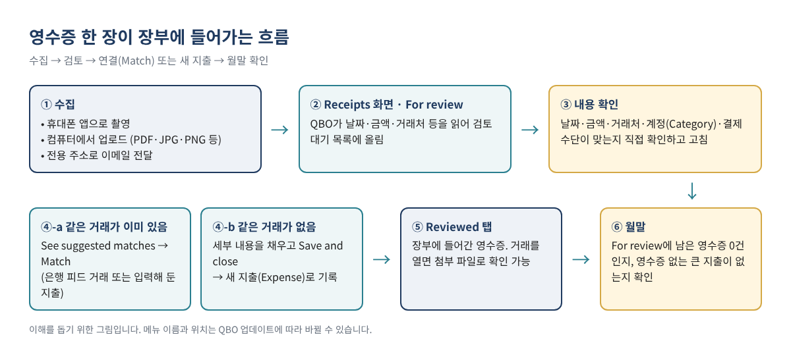
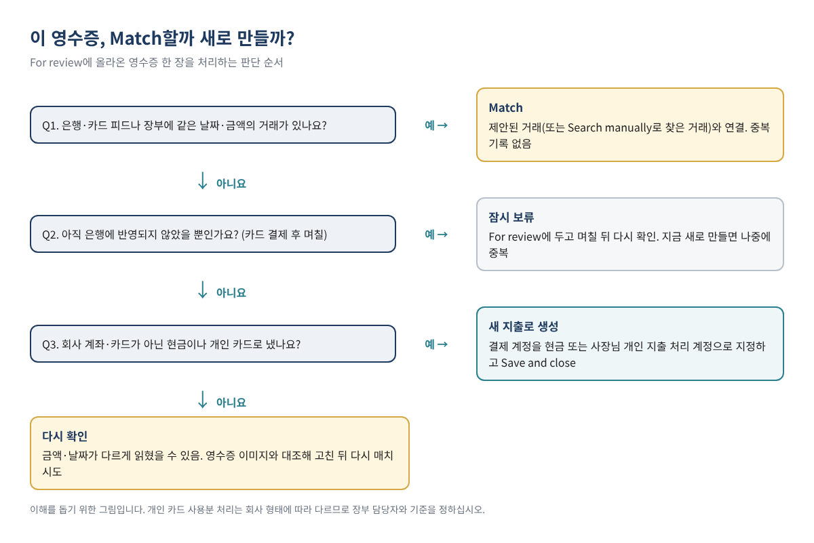
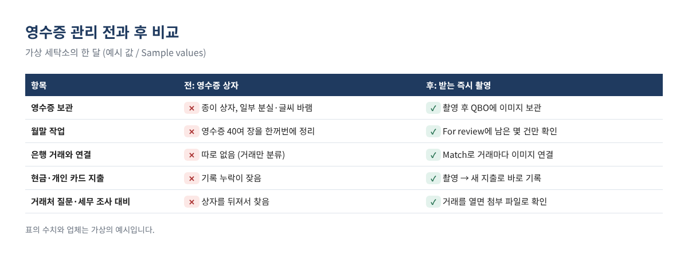
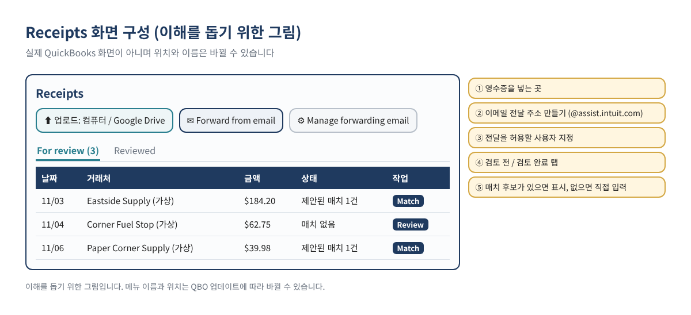

영수증 상자를 없애는 법: QBO 모바일 앱으로 영수증 찍어 거래에 바로 연결하기
월말이나 연말에 영수증 상자를 열어 보면 글씨가 바랜 감열지, 어느 거래인지 기억나지 않는 카드 전표, 현금으로 낸 작은 영수증이 뒤섞여 있습니다. 은행 거래는 QuickBooks Online(QBO)에 자동으로 들어오지만, 그 거래를 뒷받침하는 영수증은 따로 놀고 있는 경우가 많습니다. 나중에 "이 $184는 무엇을 산 것인가"라는 질문을 받으면 상자를 다시 뒤져야 합니다.
이 글은 QBO의 Receipts 기능으로 영수증을 받는 즉시 휴대폰으로 찍고, 컴퓨터나 이메일로 올리고, 이미 들어와 있는 은행·카드 거래에 Match로 연결하거나 새 지출로 기록하는 방법을 단계별로 정리합니다. 이미 입력한 거래에 파일을 붙이는 Attachments 기능과, IRS가 말하는 전자 보관 기준·보관 기간도 함께 다룹니다. 시리즈 첫 글 QuickBooks Online 기초 가이드에서 짧게 소개한 영수증 관리를 자세히 풀어 쓴 글이며, 은행 연결과 Match·Add·Rule 글과 함께 보면 이해가 빠릅니다.
이런 분께 필요합니다 ☐ 영수증을 상자나 봉투에 모아 두었다가 한꺼번에 정리하는 분 ☐ 은행 거래는 분류했지만 영수증과 연결해 둔 적이 없는 분 ☐ 현금이나 개인 카드로 낸 사업 비용이 장부에서 자주 빠지는 분 ☐ 직원이나 매니저가 받은 영수증을 사장님에게 모아 주는 방식이 번거로운 분 ☐ 종이 영수증을 버려도 되는지 궁금한 분
1. 왜 영수증을 "거래"에 연결해야 하나
IRS는 사업 장부의 근거 서류(supporting documents)로 판매 전표, 지불한 청구서, 인보이스, 영수증, 입금표, 취소된 수표 등을 예로 듭니다. 특히 매입과 비용에 대해서는 근거 서류가 누구에게(payee), 얼마를(amount), 지급했다는 증빙(proof of payment), 언제(date), 무엇을 위해(description)를 보여 주어야 하며, 한 장으로 부족하면 여러 서류를 함께 써야 할 수 있다고 안내합니다. 은행 명세서는 "언제·누구에게·얼마"를 보여 주지만 "무엇을 샀는지"는 잘 드러나지 않습니다. 영수증 이미지를 해당 거래에 붙여 두면 이 다섯 가지가 한 화면에 모입니다.
| IRS가 말하는 확인 요소 | 주로 보여 주는 자료 | QBO에서 확인되는 위치 |
|---|---|---|
| 누구에게 (payee) | 영수증·인보이스, 은행 명세서 | 거래의 Payee(거래처) 칸 |
| 얼마를 (amount) | 영수증, 은행·카드 명세서 | 거래 금액 |
| 지급 증빙 (proof of payment) | 은행·카드 명세서, 취소된 수표 | 은행 피드에서 들어온 거래와 Match |
| 언제 (date) | 영수증, 명세서 | 거래 날짜 |
| 무엇을 위해 (description) | 영수증의 품목 내역 | 첨부된 영수증 이미지, Memo, 계정(Category) |
IRS는 회계 소프트웨어 같은 전자 시스템도 종이 장부와 같은 기본 원칙을 따라야 한다고 설명합니다. 즉 QBO에 이미지를 올렸다고 끝이 아니라, 나중에 읽을 수 있고 찾을 수 있게 정리되어 있어야 합니다. 이 부분은 8장에서 다시 다룹니다.
2. 영수증을 QBO에 넣는 세 가지 방법
Intuit 도움말에 따르면 웹에서는 All apps → Accounting → Receipts에서 영수증 화면을 열 수 있습니다. 왼쪽 메뉴 구성은 자주 바뀌므로 찾기 어렵다면 상단 검색창에 "Receipts"를 입력해 보십시오. 들어오는 길은 세 가지이고, 어느 길로 들어와도 같은 Receipts 화면의 검토 대기 목록에 모입니다.

| 방법 | 어떻게 | 알아 둘 점 (Intuit 안내 기준) |
|---|---|---|
| ① 모바일 앱 촬영 | QBO 앱의 메뉴(≡) → Receipt snap → 카메라로 촬영 → Use this photo → Done | 어둡거나 흐린 사진은 읽는 데 시간이 더 걸릴 수 있음. 회전·자르기·다시 찍기 가능 |
| ② 컴퓨터 업로드 | Receipts 화면에서 Upload from computer 또는 Upload from Google Drive | PDF, JPEG, JPG, GIF, PNG. 파일 하나에 영수증 한 장. 최신 iPhone·iPad 사진(HEIC)은 변환이 필요할 수 있음 |
| ③ 이메일 전달 | 전용 주소(…@assist.intuit.com)로 영수증 이미지를 첨부해 보냄 | 첨부 파일 크기 46KB~20MB. 이미지 하나에 영수증 한 장, 한 메일에 여러 장 첨부 가능. 허용된 사용자만 보낼 수 있음 |
팁 Intuit는 업로드 전에 카드 번호나 정부 발급 신분증 번호 같은 민감한 개인정보를 영수증 이미지에서 지우라고 안내합니다. 카드 전표에 전체 번호가 찍혀 있다면 가리고 찍으십시오. 또한 Intuit 도움말에는 이 기능이 QuickBooks Online Free와 Lite 요금제에서는 제한된다고 되어 있으니, 해당 요금제라면 현재 화면에서 사용 가능 여부를 먼저 확인하십시오.
3. 단계별: 휴대폰으로 찍어서 올리기
영수증 관리의 핵심은 "받는 그 자리에서" 찍는 습관입니다. 지갑에 넣는 순간 잊어버리기 쉽습니다.
- 휴대폰에 QuickBooks Online 앱(iOS 또는 Android)을 설치하고, 장부에 접속하는 본인 계정으로 로그인합니다.
- 메뉴(≡)를 누르고 Receipt snap을 선택합니다. 앱 버전에 따라 이름이 조금 다를 수 있습니다.
- 영수증을 평평한 곳에 놓고 가장자리 네 모서리가 모두 보이게 찍습니다. 밝은 곳에서 찍으면 글자 인식이 잘 됩니다.
- Use this photo를 누르고, 더 찍을 영수증이 없으면 Done을 누릅니다.
- 앱의 Receipts 목록(For Review)에 올라왔는지 확인합니다. 보이지 않으면 화면을 아래로 당겨 새로 고칩니다.
- 길고 접히는 영수증은 펼쳐서 한 장으로 찍고, 영수증 두 장을 한 사진에 담지 않습니다. Intuit는 파일(이미지) 하나에 영수증 한 장을 권합니다.
4. 단계별: 이메일로 영수증 보내기 설정
온라인 주문 영수증이 이메일로 오거나, 직원이 출장 중 받은 영수증을 보내 주는 경우에는 이메일 전달이 편합니다. Intuit 안내에 따르면 설정에는 활성 구독, Business view 화면, 그리고 보내는 사용자에게 최소 Vendor 접근 권한이 있는 표준 사용자 권한이 필요하며, 안내 영상에서는 관리자가 설정한다고 설명합니다.
- All apps → Accounting → Receipts로 이동해 Forward from email을 선택합니다.
- 원하는 이름을 입력합니다. 주소는 @assist.intuit.com으로 끝나게 만들어집니다. Next → Looks good → Done 순서로 마칩니다.
- Manage forwarding email에서 영수증을 보낼 수 있게 할 사용자의 토글을 켜고 Close를 누릅니다.
- 허용된 사용자는 QBO에 로그인할 때 쓰는 이메일 주소에서 영수증 이미지를 첨부해 전용 주소로 보냅니다. Intuit 안내상 사용자 한 명당 등록할 수 있는 이메일은 하나입니다.
- 몇 분 뒤 Receipts 화면의 검토 대기 목록에 올라왔는지 확인합니다. Intuit에 따르면 QBO가 이미지에서 날짜, 금액, 거래처, 카드 끝 네 자리를 읽어 옵니다.
주의 Gmail 주소에 "+" 기호가 들어간 별칭은 등록되지 않을 수 있다고 Intuit는 안내합니다. 또 직원이 개인 이메일로 보내면 등록된 주소가 아니어서 들어오지 않을 수 있으니, 직원에게 "QBO 로그인 이메일로 보내기"를 분명히 알려 주십시오. 직원이 쓴 돈을 돌려받는 경비 청구(expense claims) 기능은 Intuit 안내상 QuickBooks Online Advanced 요금제가 필요합니다.
5. 검토하기: Match할까, 새 지출로 만들까
영수증이 올라왔다고 장부에 기록된 것은 아닙니다. 검토 대기 탭(For review)에서 한 장씩 확인하고 처리해야 장부에 들어갑니다. 처리한 영수증은 Reviewed 탭으로 옮겨집니다.
웹에서 처리하는 순서
- Receipts 화면의 For review 탭에서 영수증을 엽니다.
- QBO가 읽은 날짜, 거래처, 금액이 영수증 이미지와 같은지 먼저 확인합니다. 자동 인식은 틀릴 수 있습니다.
- QBO가 기존 거래와 맞는 것을 찾으면 매치 후보 수가 표시됩니다. See suggested matches를 눌러 목록에서 해당 지출을 고르고 Match를 누릅니다.
- 후보가 없는데 같은 거래가 이미 있다는 것을 알면 Search manually로 직접 찾아 연결합니다.
- 같은 거래가 정말 없다면 결제 계정, 계정(Category), Memo 등 나머지 내용을 채우고 Save and close를 눌러 새 지출로 기록합니다.
앱에서 처리하는 순서
Intuit 안내에 따르면 앱에서는 매치 후보가 있으면 금액 아래에 표시가 나타나고, 그것을 골라 연결합니다. 표시가 없으면 매치를 찾지 못한 것이므로 영수증을 밀어서(swipe) 지출을 만듭니다. 정보가 빠져 있으면 내용을 채워 Save receipt로 저장한 뒤 밀어서 지출을 만듭니다. 잘못 처리했다면 Reviewed 목록에서 오른쪽으로 밀어 다시 For Review로 되돌릴 수 있습니다.

가장 흔한 실수는 회사 카드로 결제한 영수증을 바로 "새 지출"로 만드는 것입니다. 며칠 뒤 같은 결제가 카드 피드로 들어오고, 그것을 다시 Add하면 같은 비용이 두 번 잡힙니다. 회사 계좌나 카드로 낸 영수증은 피드에 거래가 들어올 때까지 기다렸다가 Match하는 것이 원칙입니다. 반대로 현금이나 개인 카드로 낸 비용은 은행 피드로 들어오지 않으므로 영수증이 유일한 기록이 됩니다. 이런 영수증은 새 지출로 만들되, 결제 계정을 무엇으로 할지는 회사 형태에 따라 다르므로 장부 담당자와 기준을 정해 두십시오.
6. 이미 입력한 거래에 파일 붙이기: Attachments
Receipts 화면을 거치지 않고, 이미 기록된 거래에 영수증이나 계약서를 바로 붙일 수도 있습니다. Intuit 도움말에 따르면 Bill, Check, Expense, Invoice, Sales receipt, Credit memo, Vendor credit 등 대부분의 거래와 고객·거래처 정보에 첨부할 수 있지만, 계정(Account) 같은 목록 항목에는 직접 붙일 수 없습니다.
- 거래에 붙이기: 거래를 열고 Attachments 영역에서 파일을 선택한 뒤 Save and close.
- 거래처에 붙이기: 거래처 화면의 Vendor Details 탭에서 Attachments 선택. 계약서처럼 특정 거래보다 거래처 전체에 해당하는 서류에 적합합니다.
- 먼저 올려 두기: Settings ⚙ → Attachments에서 파일을 올린 뒤, 목록의 메뉴에서 Create expense 또는 Create invoice로 그 파일이 붙은 새 거래를 만들 수 있습니다.
- 허용 형식: PDF, JPEG, PNG, DOC, XLSX, CSV, TIFF, GIF, XML. 파일 이름에는 특수문자를 쓰지 않습니다.
예를 들어 "2026-11-03_EastsideSupply_184-20.pdf"처럼 날짜·거래처·금액 순으로 이름을 붙이면 Attachments 목록에서도 찾기 쉽습니다(마침표·쉼표·& 같은 특수문자는 피하십시오).
7. 예시: 가상 세탁소의 한 주 영수증 처리
가상의 세탁소 "Sunrise Cleaners"는 회사 체크카드와 소액 현금을 함께 씁니다. 사장님은 영수증을 받는 즉시 앱으로 찍고, 금요일마다 10분씩 For review를 정리하기로 했습니다. 아래는 한 주 동안 올라온 영수증 다섯 장입니다.
| 날짜 | 영수증 (가상 거래처) | 금액 (예시 값 / Sample values) | 결제 수단 | 피드에 같은 거래? | 처리 |
|---|---|---|---|---|---|
| 11/03 | Eastside Supply · 세제·옷걸이 | $184.20 | 회사 카드 | 있음 | Match → Supplies |
| 11/04 | Corner Fuel Stop · 배달 차량 주유 | $62.75 | 회사 카드 | 금요일엔 아직 없음 | 보류 → 다음 주 월요일 Match |
| 11/05 | 수선용 실·단추 (동네 상점) | $18.40 | 현금 | 없음 (현금) | 새 지출, 결제 계정 Petty cash |
| 11/06 | Paper Corner Supply · 영수증 용지 | $39.98 | 회사 카드 | 있음 | Match → Office supplies |
| 11/07 | 스팀 다리미 부품 | $96.50 | 사장님 개인 카드 | 없음 (개인 카드) | 새 지출, 회사가 정한 개인 지출 처리 계정 |
| 합계 | 5장 | $401.83 | Match 3 · 새 지출 2 | 중복 0건 |
핵심은 11/04 주유 영수증입니다. 금요일에 피드에 없다고 새 지출로 만들었다면, 월요일에 들어온 카드 거래를 또 Add하면서 $62.75가 두 번 비용으로 잡혔을 것입니다. 기다렸다가 Match했기 때문에 영수증 이미지가 카드 거래에 붙고 기록은 한 번만 남습니다. 현금과 개인 카드 영수증 두 장은 피드로 들어올 일이 없으므로 바로 새 지출로 만들었습니다.


8. 종이 원본은 버려도 되나, 얼마나 보관하나
IRS Publication 583은 전자 보관 시스템(electronic storage system)에도 종이 장부와 같은 요구 사항이 적용된다고 설명합니다. 시스템은 기록을 색인·저장·보존·검색하고 읽을 수 있는 형태로 다시 보여 줄 수 있어야 하며, IRS가 접근할 수 있는 완전하고 정확한 기록이어야 합니다. 종이 원본은 그 시스템이 기준에 맞게 재현된다는 점을 시험하고, 계속 기준을 지키는 절차를 갖춘 경우에 폐기할 수 있다고 되어 있으며, 자세한 기준으로 Revenue Procedure 97-22를 안내합니다. 흐리거나 잘린 사진은 이 기준에 맞지 않을 수 있으므로, 원본을 버리기 전에 이미지가 선명한지 확인하고, 확신이 없으면 원본도 함께 보관하는 편이 안전합니다.
보관 기간은 기록이 뒷받침하는 신고서의 부과 제척기간(period of limitations)과 연결됩니다. Publication 583의 표를 요약하면 다음과 같습니다(기간은 신고서를 제출한 날부터 계산하며, 기한 전에 낸 신고서는 기한일에 낸 것으로 봅니다).
| 상황 (Publication 583 요약) | 보관 기간 |
|---|---|
| 추가 납부 세액이 있는 일반적인 경우 (아래 경우 제외) | 3년 |
| 신고해야 할 소득을 빠뜨렸고 그 금액이 신고한 총소득의 25%를 넘는 경우 | 6년 |
| 무가치 증권 손실 또는 대손 공제를 청구하는 경우 | 7년 |
| 신고 후 환급·공제 청구를 하는 경우 | 3년 또는 세금 납부 후 2년 중 늦은 날 |
| 사기 신고 또는 신고하지 않은 경우 | 제한 없음 |
| 고용세(급여) 기록 | 세금 납부기한 또는 납부일 중 늦은 날부터 최소 4년 |
| 자산(장비·건물 등) 관련 기록 | 그 자산을 과세 처분한 연도의 제척기간이 끝날 때까지 |
IRS는 보험사나 채권자 등 세금 외의 목적으로 더 오래 보관해야 하는지도 확인하라고 덧붙입니다. QBO 안의 이미지만 믿기보다, 연말에 그해 첨부 파일과 주요 리포트를 별도 저장소에도 백업해 두면 구독 변경이나 계정 문제에 대비할 수 있습니다.
9. 흔한 실수
- 회사 카드 영수증을 새 지출로 먼저 만들기: 나중에 피드 거래를 또 Add하면 이중 기록됩니다. 피드에 들어올 때까지 기다렸다가 Match하십시오.
- 자동 인식 값을 그대로 저장: 날짜(월·일 순서), 소수점, 팁 포함 여부가 틀리게 읽힐 수 있습니다. 저장 전에 이미지와 대조하십시오.
- 한 사진에 영수증 여러 장: 한 장으로 인식되거나 금액이 섞입니다. 파일 하나에 영수증 한 장이 원칙입니다.
- For review에 쌓아 두기: 업로드만 하고 검토하지 않으면 장부에는 들어가지 않습니다. 매주 정해진 시간에 0건으로 만드십시오.
- 카드 번호가 다 보이는 사진: 민감한 정보는 가리고 찍으십시오.
- Memo 없이 저장: 영수증만으로 사업 목적이 드러나지 않는 지출(식사, 선물 등)은 누구와 무슨 목적이었는지 Memo에 짧게 남겨 두십시오.
10. 자주 묻는 질문 (FAQ)
Q1. 영수증을 올렸는데 Match 후보가 안 보입니다.
은행·카드 피드에 아직 그 거래가 들어오지 않았거나, QBO가 읽은 날짜나 금액이 실제와 다를 수 있습니다. 먼저 인식된 값을 고치고, 같은 거래가 있다는 것을 안다면 Search manually로 직접 찾으십시오. 회사 카드 결제라면 며칠 기다렸다가 다시 확인합니다.
Q2. 팁을 더한 식당 영수증은 어떤 금액으로 맞추나요?
카드 거래에는 보통 팁이 포함된 최종 금액이 찍힙니다. 서명한 전표(팁 포함 금액)를 찍어 두면 피드 거래 금액과 맞추기 쉽습니다. 식비 공제 기준은 사업 식대·파티 비용 공제 정리 글을 참고하십시오.
Q3. 직원도 영수증을 올릴 수 있나요?
직원이 QBO 사용자로 초대되어 있고 적절한 권한이 있으면 앱이나 이메일 전달로 올릴 수 있습니다. 이메일 전달은 Manage forwarding email에서 그 사용자를 허용해야 하고, 직원은 QBO 로그인 이메일로 보내야 합니다. 사용자 초대와 권한은 직원·회계사 초대와 권한 설정 글에 정리되어 있습니다.
Q4. 잘못 Match했어요. 되돌릴 수 있나요?
앱에서는 Reviewed 목록에서 오른쪽으로 밀어 For Review로 되돌릴 수 있다고 Intuit는 안내합니다. 웹에서는 현재 화면의 Reviewed 탭에서 되돌리기 옵션을 확인하십시오. 거래 금액이나 계정을 잘못 저장했다면 해당 거래를 열어 직접 고칩니다.
Q5. 종이 영수증은 찍은 뒤 바로 버려도 되나요?
IRS Publication 583은 전자 보관 시스템이 기준에 맞게 기록을 재현하는지 시험하고 이를 유지하는 절차가 있을 때 원본 폐기가 가능하다고 설명합니다. 흐린 사진이나 감열지처럼 빨리 바래는 영수증은 이미지 품질을 먼저 확인하고, 확신이 없으면 원본을 보관 기간 동안 함께 두는 편이 안전합니다.
11. 셀프 체크
- ☐ 휴대폰에 QBO 앱을 설치하고 Receipt snap 위치를 찾았다
- ☐ 이메일 전달 주소(@assist.intuit.com)를 만들고, 보낼 사용자를 허용했다
- ☐ 카드 번호 등 민감한 정보는 가리고 찍는다
- ☐ 파일·사진 하나에 영수증 한 장만 담는다
- ☐ 회사 카드 영수증은 피드 거래가 들어온 뒤 Match한다
- ☐ 현금·개인 카드 영수증은 새 지출로 기록하고 결제 계정 기준을 정했다
- ☐ 매주 정해진 요일에 For review를 0건으로 만든다
- ☐ 연말에 첨부 파일과 리포트를 별도로 백업하고, 보관 기간을 확인했다
함께 보면 좋은 글
- QuickBooks Online 기초 가이드: 처음 시작할 때 꼭 알아야 할 10가지
- QBO 은행 연결 완전 정리: Match, Add, Rule로 분류 자동화
- Bill과 지출 관리: 외상 매입, 일괄 지급, 거래처별 관리
- 직원·회계사 초대와 권한 설정
- 중복 거래와 Reconcile 차이 찾기
- 사업 식대·파티 비용 공제 정리 (2026)
이 글은 일반적인 교육용 정보이며 세무·법률·재무 자문이 아닙니다. 개별 상황에 대한 판단은 자격을 갖춘 전문가와 상의하십시오. QuickBooks Online의 화면, 메뉴 이름, 요금제별 기능과 가격은 수시로 바뀌므로 실제 작업 전에 현재 화면과 Intuit 및 IRS의 공식 안내를 확인하십시오. 예시의 업체와 거래처, 금액은 모두 가상입니다.
QuickBooks is a registered trademark of Intuit Inc.; not affiliated with or endorsed by Intuit.